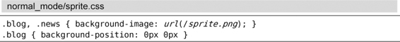

）。
）。技巧10用次数做简单的算术运算
大多数普通模式命令可以在执行时指定次数，我们可以利用这个功能来做简单的算术运算。
很多普通模式命令都可以带一个次数前缀，这样Vim就会尝试把该命令执行指定的次数，而不是只执行一次（参见:h count:h aw）。
<C-a>和<C-x>命令分别对数字执行加和减操作。在不带次数执行时，它们会逐个加减，但如果带一个次数前缀，那么就可以用它们加减任意整数。例如，如果我们把光标移到字符5上，执行10<C-a>就会把它变成15。
但是如果光标不在数字上会发生什么？文档里说，<C-a>命令会“把当前光标之上或之后的数值加上 [count]”（参见:h ctrl-a:h aw）。因此，如果光标不在数字上，那么<C-a>命令将在当前行正向查找一个数字，如果找到了，它就径直跳到那里。我们可以利用这一点简化操作。
下面是一段CSS片段：

我们要复制最后一行并且对其做两个小改动，即用“news”替换单词“blog”，以及把“0px”改为“-180px”。我们可以运行yyp来复制此行，然后用cw来修改第一个单词。但我们该怎么处理那个数值呢？
一种做法是用f0跳到此数字，然后进入插入模式手动修改它的值，即i-18<Esc>。不过，运行180<C-x>则要快得多。由于我们的光标不在要操作的数字上，所以该命令会正向跳到所找到的第一个数字上，从而省去了手动移光标的步骤。让我们看看整个操作过程：
在本例中，我们只复制了一行并做出改动。但是，假设你要复制10份，并对后续数字依次减180。如果要切换到插入模式去修改每个数字，我们每次都得输入不同的内容（-180，然后-360，以此类推）。但是如果用180<C-x>命令的话，对后续行也可以采用相同的操作过程。我们甚至还可以把这组按键操作录制成一个宏（参见第11章），然后根据需要执行多次。
数字的格式
007的后面是什么？不，这不是詹姆斯·邦德的恶作剧，我是在问：如果对007 加1，你觉得会得到什么结果。
如果你的答案是008，那么当你尝试对任意以0开头的数字使用<C-a>命令时，也许会感到诧异。像在某些编程语言中的约定一样，Vim把以0开头的数字解释为八进制值，而不是十进制。在八进制体系中，007 + 001 = 010，看起来像是十进制中的10，但实际上它是八进制中的8，糊涂了吗？
如果你经常使用八进制，Vim的缺省行为或许会适合你。如果不是这样，那么你可能想把下面这行加入你的vimrc里：
set nrformats=
这会让Vim把所有数字都当成十进制，不管它们是不是以0开头的。